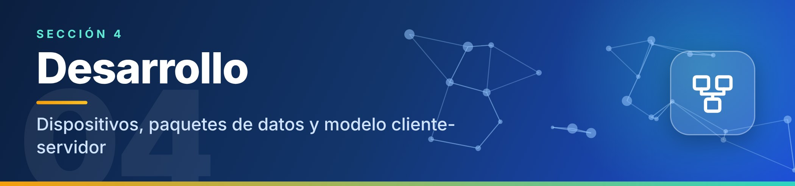
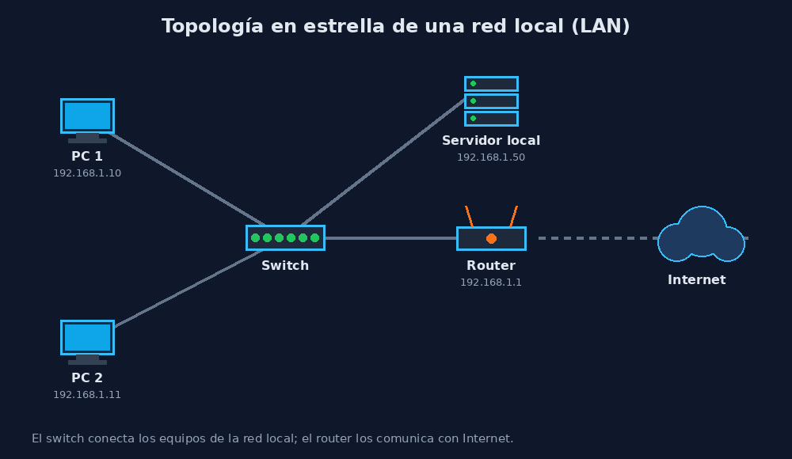
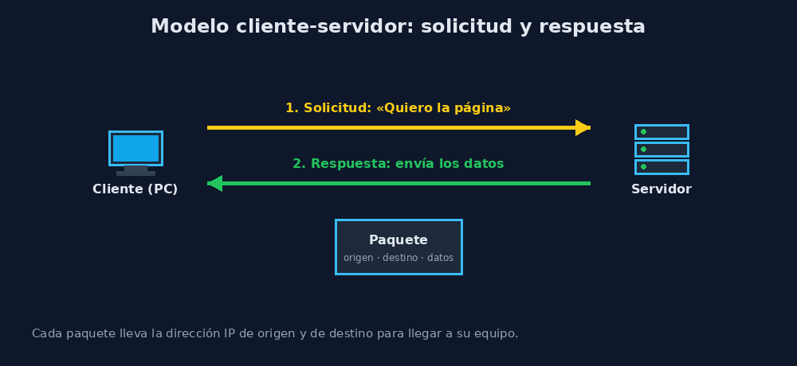

Desarrollo

1Elementos de la red
2¿Cómo viaja la información?
Los datos no viajan completos, sino divididos en paquetes. Cada paquete lleva la dirección IP de origen, la dirección IP de destino y una parte de los datos. Los dispositivos de la red leen esas direcciones para hacer llegar el paquete al equipo correcto.

En esta topología en estrella, todos los equipos se conectan al switch. Para salir a Internet, el tráfico pasa además por el router.
3El modelo cliente-servidor
Cuando un cliente necesita algo (por ejemplo, una página web), envía una solicitud al servidor; el servidor procesa el pedido y devuelve una respuesta con los datos.

4Animación interactiva
Pulsa los botones de la animación para enviar un paquete entre dos dispositivos. Observa por cuáles equipos pasa y lee el mensaje que aparece sobre el lienzo. También puedes activar el modo automático.